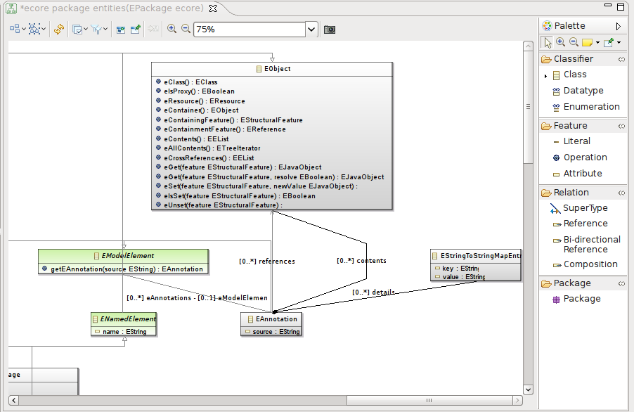
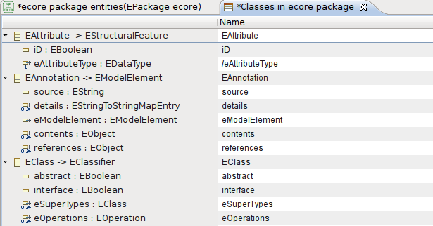
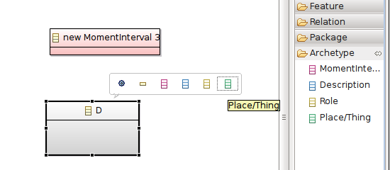
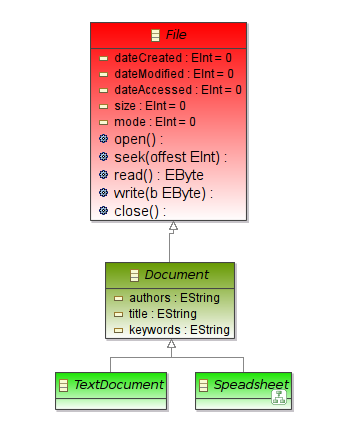

The Sirius Ecore Modeler provides several representations organized in different viewpoints which can be used to create, view and edit Ecore models. It also provides a good example of a realistic use of the Sirius technology. This guide is targeted to end users, but Sirius specifiers can study the source of the Sirius Ecore Modeler to see how many of the features of Sirius are used in practice.
The viewpoints available are:
The following sections provide more details on each viewpoint.
This viewpoint provides two main representations: Entities and Classes.
Entities provides a class diagram-like graphical representation of an Ecore model. It is the main graphical representation to create, visualize and edit Ecore models. The figure below shows an example diagram:

Entities diagram are created on Ecore packages, and show all the contents of that package. If the Package optional layer is enabled (which it is by default), the sub-packages and their content is also visible. The optional layer Dynamic adds a tool in the palette to create a dynamic instance of an EClass defined in your model, without requiring EMF code generation.
The palette provides all the tools required to:
When keeping the mouse on a selected element, a popup will appear with modeling assistants (shortcut icons) for all the tools which can be applied on the selected element. For example in the figure below, an EClass is selected, and shortcuts are available to create new EOperation and new EAttributes in that class without going back to the palette:
To delete an element, simply select it on the diagram and hit the Delete key, or invoke the Delete from model action from the context menu or the diagram’s toolbar.
Packages, classifiers, and features can be moved into a different parent (package or classifier, depending on the case), by simple drag’n’drop. The source and target elements of all the relations can also be modified by dragging the extremity of the corresponding edge to the new source or target element.
Direct edit of all the elements labels is supported, to quickly rename the element and, in some cases, other properties beside the name:
/myDerivedAttribute : EString = "default". When editing an attribute’s label, each of these can be controlled. For example, entering myNewName : EInt will change the name of the attribute, set it non-derived (as the new name does not start with a «/») and change the type to EInt. The default value will not be modified as it is not mentioned in the text entered. Similarly, entering myNewName = 42 will change the default value but not the type, which is not specified. There are also shortcuts that allow you to edit quicker the attribute’s label to your need. For example:newName will simply rename the method but keep its parameters and return type;: EInt will simply rename the return type;= 42 will simply change the default value;newName = 47 will change the name and the value but not the type or newName:EInt=105will change the entire label.m(a A, b B) : EBoolean. Each part (name, parameters and type) can be modified through direct edit. If a part is not mentioned in the edit string, it will not be modified. Using the previous example, m2 would simply rename the method but keep its parameters and return type, :EInt would just change the type, and m() would keep the same name and return type but remove all the parameters. When specifying parameters, they must be separated by a comma (,). The type of a parameter is optional; if specified, it can be separated from the name by a colon (:), although this is not required.[0..*] /ref denotes a derived reference named ref which can point to any number of elements (including zero). When editing the label, it is possible to specify only the name and derived attribute (e.g. renamedRef), only the cardinality (e.g. [1..1]) or both (e.g. [0..1] ref2). Three special strings are also support to make some common operations quicker:0 and 1 only changes the lower bound of the cardinality of the reference, to 0 or 1;* only changes the upper bound of the cardinality of the reference, to -1 (meaning «unbounded»).These direct edit features are provided as convenience for common tasks. For more complex customization of the other properties of an element, you can always access all their properties in the Semantic section of the Properties view when the element is selected.
By default, Entities diagrams are in synchronized mode, which means the graphical elements visible on the diagram always include all the elements in the corresponding package. Sometimes you want a diagram to show only a subset of these elements, for example when documenting a particular aspect of the model while ignoring the rest. In addition to explicitly hiding some elements in the diagram, it is also possible to switch the diagram in unsynchronized mode from the context menu on the diagram’s background. In this mode, it becomes possible to remove the graphical representations of some of the model elements without affecting the underlying model by using the Delete from diagram action. Be aware that if you have an existing diagram in unsynchronized mode and you add new elements in the model from outside this diagram (from another diagram or table for example), the new elements will not appear automatically on the unsynchronized diagram.
This representation provides a tabular editor for all the classes in an Ecore model and their structural features (attributes and references):

The left column shows the list of classes and their structural features in the current package in a tree. If the package contains sub-packages, they are also shown with their content, recursively.
The Name column can be used to edit the name of a package, class or feature. To see and edit other properties of an element, simply select the corresponding line and use the Properties view to access all the properties of the element.
When the Archetype viewpoint is enabled, a new optional layer named Archetypes is available in the main Entities graphical modeler, which adds support for modeling in color with archetypes.
Concretely, when the layer is enabled, four new tools become available in the palette, as shown in the figure below:

These tools can be used to create new EClasses with special annotations indicating they represent some particular kind of elements. Each of the four kinds of archetypes supported are represented by a different color. As shown on the figure, the tools can also be used on already existing EClasses to set or change their categorization.
Inside the model, the archetypes are encoded as EAnnotations added to the EClass, with a source of http://www.eclipse.org/sirius/dnc/archetype and a single details entry. The key of the entry is archetype, and the value can be one of (descriptions taken from the Wikipedia page):
MomentInterval: represents a moment or interval of time; displayed in pink.Description: a catalog-like description which classifies or ‹labels› an object; displayed in blue.Role: represents a way of participating in an activity (by either a person, place, or thing); displayed in yellow.Thing: represents something tangible, uniquely identifiable; displayed in green.When the Documentation viewpoint is enabled, a new optional layer named Documentation is available (and enabled by default). This layer adds two new tools to the palette in the Documentation section:
In addition, the Documentation layer customizes the representation of classes so that classes which do not have any documentation assigned to them are drawn with a bright red border to stand out and be identified easily.
The figure below illustrates these features:

Technically, the documentation annotations are stored in a way compatible with EMF’s documentation capabilities: the annotation has a source of http://www.eclipse.org/emf/2002/GenModel and the documentation string itself is stored in a details entry with key documentation.
The Quality viewpoint provides three types of diagrams and a new optional layer for the Entities diagram which can be used to assess the quality of a model based on different metrics.
Dependencies diagrams can be created on EPackages. They show the target package itself and all the other packages it depends on through its contents. For example, if an EClass in the target package has a reference whose type is defined in another one, an edge will be visible between the packages to represent their dependency.
The figure below shows an Entities diagram on a sample Ecore model on the left, and the corresponding Dependencies diagram for the bank package on the right. The package which is analyzed is shown in yellow, and the other packages (its dependencies) in orange. A red arrow from package to another indicates a dependency.

The optional layer Content (disabled by default) can be enable to show the classifiers which are defined inside each of the packages.
Relations diagrams are similar in intent to Dependencies diagram, but on the level of EClasses instead of packages. They are created on an EClass (say A), which is represented on the diagram. Two optional layers (disabled by default) are available to make visible on the diagram either the classes on which A depends or which depend on A, with connections representing the direction of the dependency. A class A is considered depending on another class B either if B is a direct supertype of A or if A has an EReference of type B.
The figure below illustrates a Relations diagram on the class User defined in the sample model already used for the Dependencies diagram. Here, both optional layers are enabled, so we see both classes which depend on User (here Account) and classes on which User depends (Date and Address).

Hierarchy diagrams can be created on an EClass, and represent both the class itself and all its direct and indirect super-types.
The figure below shows a sample metamodel for a filesystem on the left, and on the right a Hierarchy diagram on the Spreadsheet class (shown in bold), which show all its direct and indirect super-types.

The Quality viewpoint also extends the Entities diagram with a new optional layer named Size (disabled by default). When enabled, it changes the color of the EClasses on the diagram to shades of green, based on the size of the EClass (i.e. the number of features it contains). The more features a class contains, the more complex it is considered and the darker it is represented.
The figure below shows a subset of the filestystem metamodel used above, with the Size layer enabled:

We can see that the classes have a different color depending on how much features they contain. Small classes are bright green, classes with a few features are a darker shade of green, and very big classes which probably define too many features are shown in red.
The Review viewpoint provides a table which can be used to review and document a model.
The Documentation table (created on an EPackage) can be used to review and edit the documentation annotations associated with the EClasses of a package and their features. See the example below:

The Generation viewpoint provides a table to edit the generation configuration associated to an Ecore model. Note that it can be enabled only if the genmodel associated to the ecore resource is loaded as a semantic resource inside the session.
This table is used to edit some of the generation configuration associated to an Ecore model. To use it, you must have initialized the genmodel corresponding to the Ecore model and added it as a semantic resource in the session. Then you can create a new GenPackage Attributes table on the top-level GenPackage element.
For each structural feature of each type in a package (and its sub-packages), the table shows two columns, «Category» and «Description», which correspond to the category in which to put the feature’s property descriptor, and the description to use for that descriptor. These informations are stored in the genmodel and used by EMF to organize the properties of model elements into logical categories in the property sheets it generates.